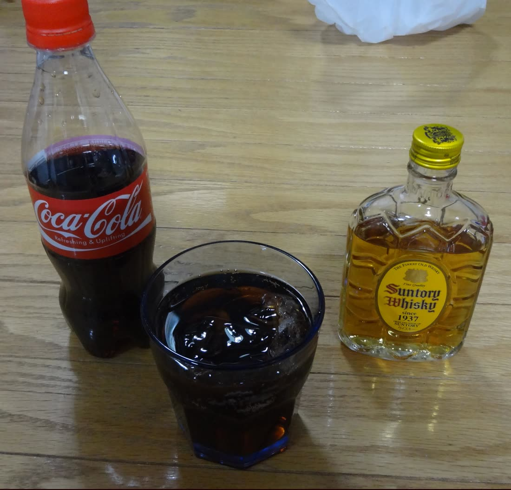
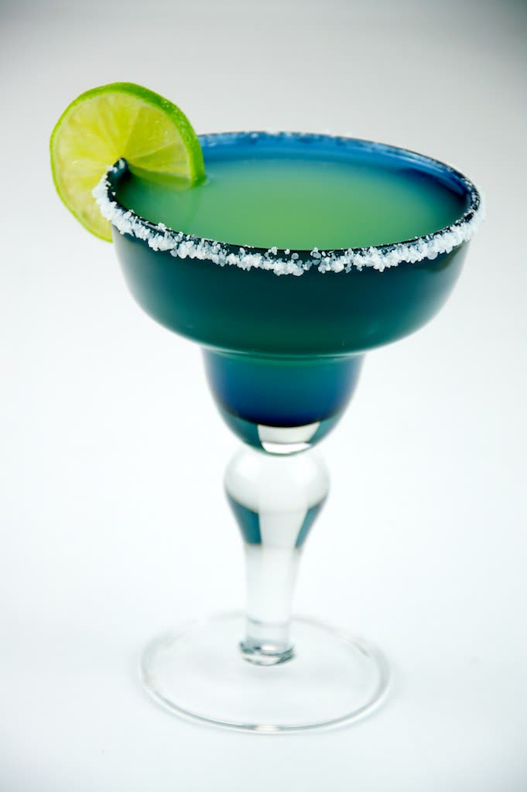
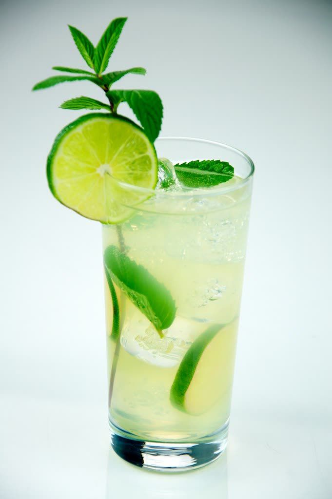
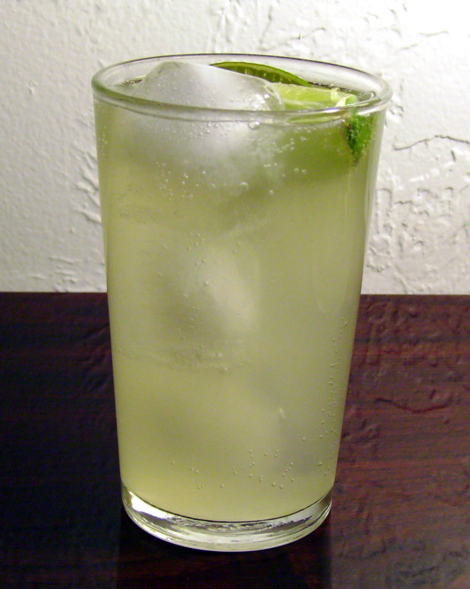

Whisky servido en las rocas y completado con refresco de cola. Se sirve en un vaso alto con hielo, primero el whisky y después el refresco, revolviendo suavemente.

Tequila, licor de naranja y jugo de limón agitados con hielo. Se sirve en copa escarchada con sal en el borde y una rodaja de limón.

Ron blanco, hojas de hierbabuena machacadas, azúcar, jugo de limón y agua mineral. Se sirve en vaso alto con mucho hielo y una ramita de hierbabuena.

Tequila con refresco de toronja y un toque de limón, servido en vaso alto con hielo y sal en el borde. Uno de los cocteles más pedidos en México.